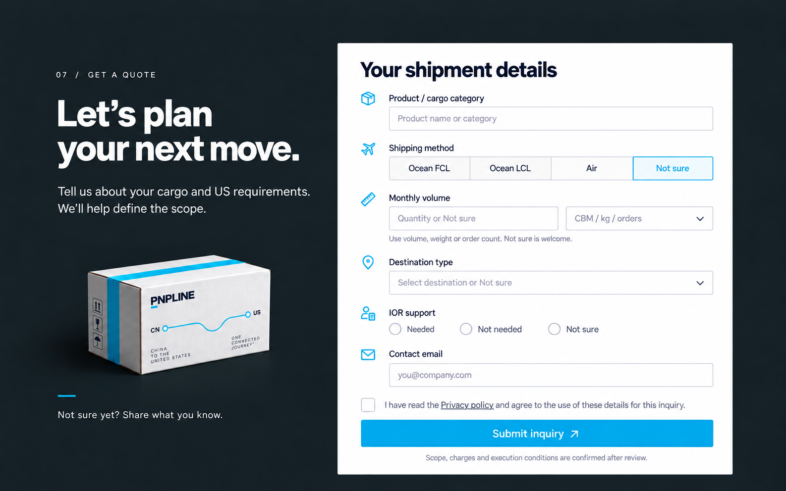

PNPLINE / QUOTE CONCEPT원고의6개 항목과 동의를 한 번의 문의로
기존 차콜 배경·소개와 밝은 입력면을 이어가며 폼내용을 원고기준으로 재구성했습니다. 현재영문사이트와 언어를 맞췄습니다.

정지컨셉 이미지이며 실제문의 전송폼이 아닙니다. 이미지의 운송방식 Not sure는 선택상태 예시입니다.
| 항목 | 입력·선택 |
|---|
| 제품 | 제품명·카테고리 |
| 운송방식 | FCL / LCL / 항공 / 미정 |
| 월물량 | 수량+단위(CBM·kg·orders·기타) 또는 미정 |
| 목적지 | FBA창고 / PNPLINE미국직영창고 / 최종소비자 / 미국기업·소매수령처 / 미정 |
| IOR | 필요 / 불필요 / 불명 |
| 연락이메일 | 본 문의 연락용 이메일 |
| 동의 | 개인정보정책 열람과 문의처리를 위한 정보사용 동의 |